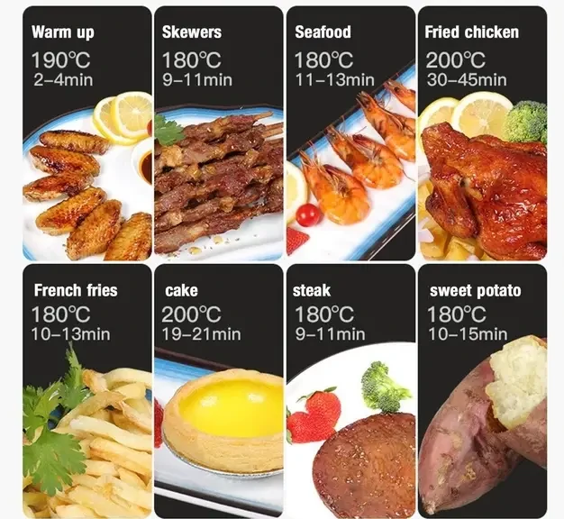
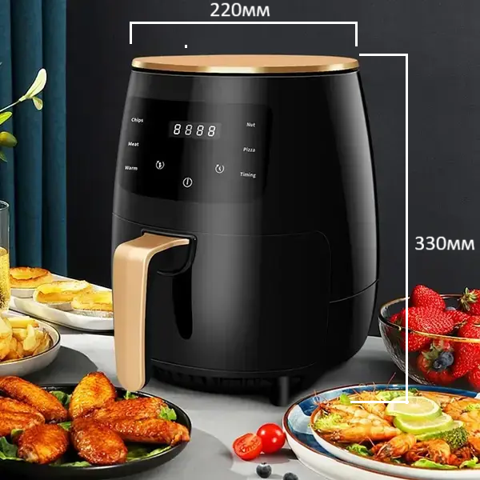

Кінець пропозиції через:
Кінець пропозиції через:

Сертифікати якості

Швидка доставка

Оплата при отриманні
-
Економія 25%
1399 грн -
Стара ціна
1850 грн
Аерогриль – це електричний кухонний прилад, який дозволяє готувати улюблені страви з мінімальним використанням масла або без нього. За допомогою циркуляції гарячого повітря вона створює хрустку скоринку зовні і зберігає соковитість усередині.
Завдяки її універсальності можна смажити, випікати, розморожувати та розігрівати м'ясо, рибу, картоплю за допомогою одного приладу. Мінімальна температура 60 °C та максимальна 200 °C забезпечують ідеальні умови для приготування різних інгредієнтів, зберігаючи їх смак та поживні речовини.
Інтуїтивно зрозуміле сенсорне управління робить використання аерофрітюрниці простим та зручним. Можна використовувати вбудовані програми або отримати повний контроль над процесом приготування з ручним встановленням часу та температури.
Справжній шеф на вашій кухні!

🔥 Смачно – без краплі олії! 🔥
Приготуйте улюблені страви у безмасляній аеро-фритюрниці швидко, смачно та корисно:
🥩 Стейки, 190°C
🍤 Морепродукти,180°C
🍟 Картопля фрі, 180°C
🍗 Курячі крильця, 200°C
🌡 Температура до 200°C
⏱️ Час приготування — від 15 до 45 хвилин
🧁 Обʼєм 6 літрів – для всієї родини!
Готуй без олії – їж зі смаком!
Зроби перший крок до здорового харчування вже сьогодні!
Характеристики :
- - Потужність: 2400 Вт
- - Живлення: мережа 220 В
- - Встановлені програми: Розморожування, розігрів, м'ясо, курка, риба, випічка, овочі гриль
- - Покриття чаші: Антипригарне
- - Тип нагрівального елемента: металевий тен
Умови доставки

Часті питання
-
Ні, корпус термостійкий. Зовнішні стінки залишаються теплими, але не гарячими – можна торкатися без ризику.
-
Так, для деяких страв рекомендовано попереднє розігрівання 2–3 хвилини. Але багато програм уже враховують цю функцію автоматично.
-
Таймер розрахований до 60 хвилин безперервної роботи, що підходить навіть для запікання великих шматків м’яса.
-
Так, знімний кошик та лоток покриті антипригарним шаром і підходять для миття в посудомийній машині.
-
Так, пристрій підходить для запікання – можна готувати випічку, міні-піци, мафіни, навіть хачапурі.
-
- В якому випадку та в які строки можна повернути товар?
Якщо товар виявився неналежної якості, ви маєте право повернути його протягом 14 днів з дня покупки. - В якому випадку та в які строки можна обміняти товар?
Якщо товар належної якості, але не підійшов розмір, ви маєте право обміняти його протягом 14 днів з дня покупки. - Умови повернення/обміну товару належної якості:
Товар належної якості (який відповідає опису на сайті і без дефектів) можна повернути, якщо збереглися товарний вигляд і властивості: оригінальна упаковка, бірки без пошкоджень і відсутність слідів експлуатації. Повернення здійснюється за рахунок покупця через транспортну компанію Нової Пошти. - Умови повернення товару неналежної якості:
Повернення товару неналежної якості можливо в разі наявності дефектів або невідповідності опису на сайті. Повернення можливе протягом 14 днів з моменту покупки при виявленні дефектів на етапі огляду або примірки товару (без експлуатації). - Як відправити повернення?
Упакувати товар, включаючи оригінальну упаковку та бірки. Заповнити заяву на повернення, звернувшись до менеджера. Відправити через Нову Пошту після погодження з менеджером. - Повернення коштів:
Кошти повертаються протягом 5 днів після отримання посилки на відділенні Нової Пошти.
- В якому випадку та в які строки можна повернути товар?